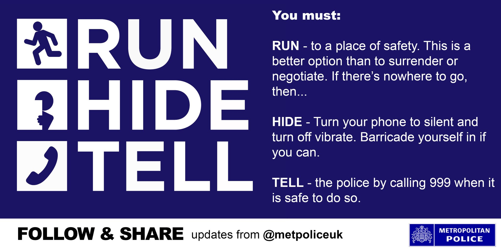
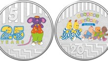
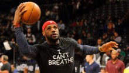

Pauline Hanson's anti-Islam post in wake of London attack slammed by Bill Shorten
By political reporter Stephen Dziedzic
Updated

Federal Opposition Leader Bill Shorten has lashed out at Pauline Hanson after the One Nation leader used the London attacks to renew her call to stop Muslims from immigrating to Australia.
Senator Hanson took to social media in the immediate aftermath of the attack to say "stop Islamic immigration before it is too late".
It was accompanied by a graphic mimicking the "Run, Hide, Tell" emergency message released by British police earlier in the day.
UK police were telling people to run to a safe place and hide if they were caught up in a terror attack, before calling emergency services.
One Nation's graphic recasts that slogan as a call for a sweeping immigration overhaul.
"Australia is tired of Labor, the Greens and the Liberals RUNNING their campaign that Islam is good for Australia," it reads.
It also says Australia will not hide the link between "Islamic teachings" and terrorism, and Australians are tired of telling politicians that Islam is not compatible with Australia.
Mr Shorten said it was "disgusting" that Senator Hanson was trying to stoke a debate about immigration "within hours" of the attack.
"I'd just say to Pauline and everyone else, hold your horses," he said.
"You're in politics, whatever point you want to make you might get that opportunity — but today it's crass, idiotic and disgusting."
He also said the attack reinforced the need for Australians to "stick together".
"The exact win for terrorists and violent criminals is when they see communities start to fray and become suspicious of others," he said.
Ms Hanson was quick to hit back at Mr Shorten on social media.
"Labor started this under Whitlam, Frazer (sic) was almost as bad. Rudd & Gillard opened the borders. Bill Shorten will make the same mistake," she tweeted.
"The people of Britain have been let down by their leaders. It's so frustrating to see fools like Bill Shorten making the same mistakes."
In the US,
President Donald Trump promoted his controversial travel ban
in a tweet as events were unfolding in London.
"We need to be smart, vigilant and tough. We need the courts to give us back our rights. We need the Travel Ban as an extra level of safety!" he wrote.

Infographic:
The original "Run, Hide, Tell" image tweeted out by London Metropolitan Police on June 4, 2017.
(Twitter: Metropolitan Police)
Topics:
terrorism,
government-and-politics,
federal-government,
pauline-hanson,
bill-shorten,
australia,
united-kingdom
First posted
London Bridge attack
-
People run down, stabbed in 'deliberate and cowardly' London Bridge terror attack
. -
Live: Australian woman stabbed in neck during London terror attack
. -
How the London Bridge and Borough Market attack unfolded
. -
London Bridge attack in photos
. -
'Let's lock these doors and get people in': Witnesses recount London Bridge attack
. -
Sam Dastyari describes 'panic and dread' in London
. -
Trump tweets about travel ban in wake of London attack
.
Top Stories
- Live: Australian woman stabbed in neck during London terror attack
- 'Enough is enough': Theresa May condemns London attack
- How the London Bridge and Borough Market attack unfolded
- 'Let's lock these doors and get people in': Witnesses recount London Bridge attack
- Sam Dastyari describes 'panic and dread' among London restaurant-goers
- Shorten slams Pauline Hanson's 'disgusting' London tweet
- Trump tweets about travel ban in wake of London attack
- National sovereignty under threat from influence of China's Communist Party
- Police confirm human remains found belong to Leveson
- SPORT Magpies see off strong challenge from Dockers in Perth
- Tourist's leg degloved in Queensland yachting accident
- Pilbara child sex charges spark calls a 'wake-up' call, says Aboriginal children's advocate
- First home buyers need 40 years' worth of savings for a Sydney deposit: UBS
- SPORT Bulldogs mauled by Panthers after Manly's golden-point win
- Philippine police say casino attacker was indebted gambler
- How a university professor lost $230,000 on the pokies
- Domestic violence victims often choosing between their pets and leaving
- Bulldust no bother to Gina Rinehart as she ushers in a new Kidman cattle era


![ABC News on YouTube]( "ABC News on YouTube")
Got a news tip?
If you have inside knowledge of a topic in the news,
contact the ABC.
Features
-
Solving the GST problem
By political reporter Tom LowreyThe Federal Government will face a real challenge if it attempts to re-shape how it doles out the GST. Here's why. -
 Bananas in Pyjamas turn 25
Bananas in Pyjamas is celebrating 25 years and to mark the occasion the Royal Australian Mint has created a commemorative coloured coin set. -
How to spot a bogan
Where once bogan was a vicious insult, nowadays it's a badge of honour and point of pride. But what exactly is a bogan? -
 A show of leadership
LeBron James shows leadership as he calls for racial equality in the United States, writes Tracey Holmes.
Top Stories
- Live: Australian woman stabbed in neck during London terror attack
- 'Enough is enough': Theresa May condemns London attack
- How the London Bridge and Borough Market attack unfolded
- 'Let's lock these doors and get people in': Witnesses recount London Bridge attack
- Sam Dastyari describes 'panic and dread' among London restaurant-goers
- Shorten slams Pauline Hanson's 'disgusting' London tweet
- Trump tweets about travel ban in wake of London attack
- National sovereignty under threat from influence of China's Communist Party
- Police confirm human remains found belong to Leveson
- Magpies see off strong challenge from Dockers in Perth
Just In
- 'Enough is enough': Theresa May condemns London attack
- Police confirm human remains found belong to Leveson
- Pilbara child sex charges spark calls a 'wake-up' call, says Aboriginal children's advocate
- Magpies see off strong challenge from Dockers in Perth
- Philippine police say casino attacker was indebted gambler
- Tasmanian farmers allowed to cut down more native timber
- Shorten slams Pauline Hanson's 'disgusting' London tweet
- 'Cutting edge' German research ship visits Fremantle on expedition
- Tourist's leg degloved in Queensland yachting accident
- How the London Bridge and Borough Market attack unfolded
Most Popular
- Live: Australian woman stabbed in neck during London terror attack
- People run down, stabbed in 'deliberate and cowardly' London Bridge terror attack
- National sovereignty under threat from influence of China's Communist Party
- Shorten slams Pauline Hanson's 'disgusting' London tweet
- Rebel Wilson's bogan pride: How to spot a bogan
- London Bridge attack in photos
- How a university professor lost $230,000 on the pokies
- How the London Bridge and Borough Market attack unfolded
- Tourist's leg degloved in Queensland yachting accident
- Sam Dastyari describes 'panic and dread' among London restaurant-goers
Analysis & Opinion
- LeBron James can become a giant of American civil rights movement
- Rebel Wilson's bogan pride: How to spot a bogan
- An Indigenous seventh state: a radical idea from a constitutional conservative
- What did Senate estimates uncover this week?
- 'Dangerous' women: Why do Muslim feminists turn a blind eye to Islamist misogyny?
- Have we finally reached 'peak' house prices?
- Probyn: Shorten forced to fight internal party politics to get his way
- In defence of grammar pedantry
- US business can still lead world to lower carbon future despite Trump's Paris pull-out
- Note to Margaret Court: the Bible isn't meant to be read that literally
Site Map
Connect
This service may include material from Agence France-Presse (AFP), APTN, Reuters, AAP, CNN and the BBC World Service which is copyright and cannot be reproduced.
AEST = Australian Eastern Standard Time which is 10 hours ahead of UTC (Greenwich Mean Time)